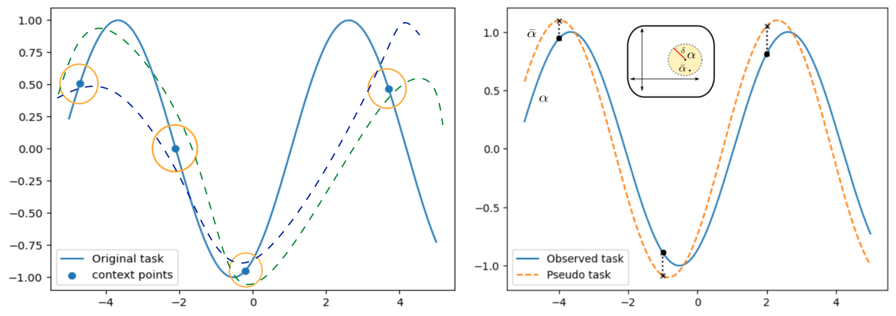

Modeling Task Uncertainty for Neural Processes to Meta-Learn with Fewer Tasks
Neural Processes are a deep learning based version of Gaussian Processes, and work very well as meta-learning models. However they require a large number of tasks to reach a good level of performance contrary to the expectation in meta-learning. We developed our method of pseudo-tasks to reduce this task requirement and accelerate generalization for Neural Process models.
Paper →